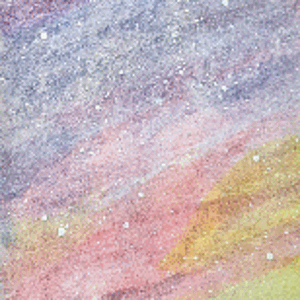

A Sampling of My Art
I once believed that I was not a creative person. I took an online art class as a pandemic hobby and discovered a new talent and passion. I hope you enjoy this smattering of my creations as I've learned more about how to create.
- All works
- Watercolor
- Oil
- Other
-
